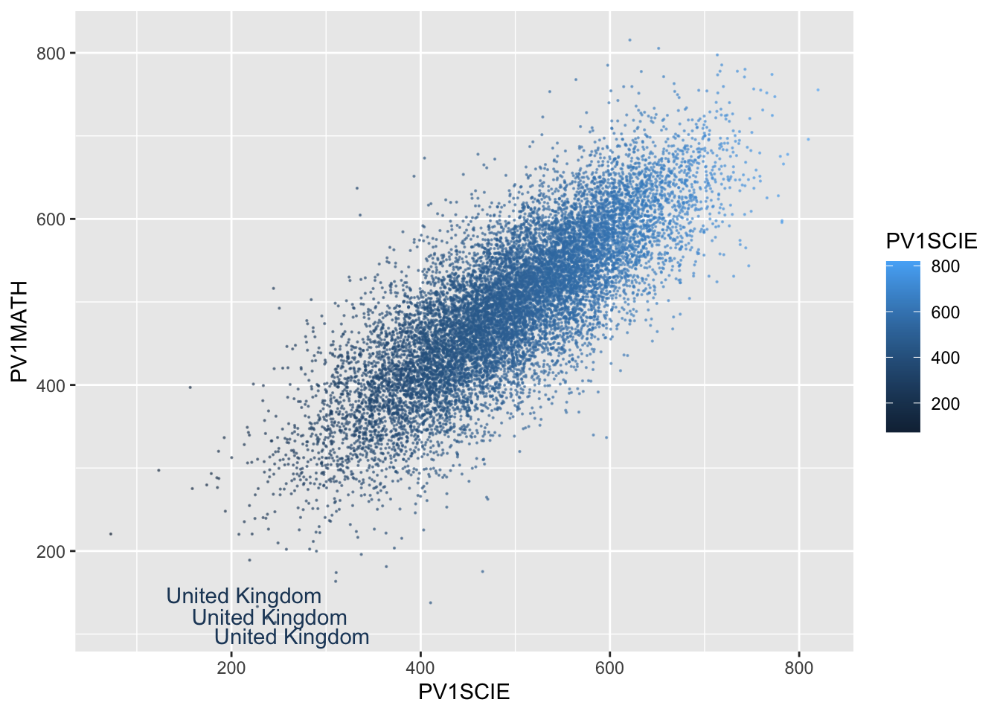

Code
library(ggrepel)
plot_data<-PISA_2018%>%
select(CNT, PV1SCIE, PV1MATH)%>%
filter(CNT=="United Kingdom")
UKSci<-mean(plot_data$PV1SCIE)
ggplot(data=plot_data, aes(x=PV1SCIE, y=PV1MATH, colour=PV1SCIE))+
geom_point(size=0.1, alpha=0.5)+
geom_text_repel(aes(label=CNT))
Code
PISA_2018%>%
select(CNT, PV1SCIE, PV1MATH)%>%
group_by(CNT)%>%
summarise(meanSci=mean(PV1SCIE))%>%
gt()| Country code 3-character | meanSci |
|---|---|
| Albania | 416.7792 |
| United Arab Emirates | 425.3223 |
| Argentina | 417.5939 |
| Australia | 502.0657 |
| Austria | 492.5686 |
| Belgium | 502.4179 |
| Bulgaria | 426.1866 |
| Bosnia and Herzegovina | 398.3858 |
| Belarus | 473.6168 |
| Brazil | 406.5177 |
| Brunei Darussalam | 431.1364 |
| Canada | 509.8942 |
| Switzerland | 495.0807 |
| Chile | 460.0079 |
| Colombia | 421.5684 |
| Costa Rica | 413.7561 |
| Czech Republic | 513.6414 |
| Germany | 504.3018 |
| Denmark | 479.7773 |
| Dominican Republic | 337.5657 |
| Spain | 491.2425 |
| Estonia | 530.3578 |
| Finland | 519.4270 |
| France | 485.4570 |
| United Kingdom | 495.2457 |
| Georgia | 384.0562 |
| Greece | 454.9630 |
| Hong Kong | 519.3812 |
| Croatia | 471.4272 |
| Hungary | 487.2724 |
| Indonesia | 414.6377 |
| Ireland | 495.0253 |
| Iceland | 473.6213 |
| Israel | 464.4791 |
| Italy | 475.7627 |
| Jordan | 429.5889 |
| Japan | 528.9740 |
| Kazakhstan | 413.7508 |
| Korea | 520.4696 |
| Kosovo | 363.1741 |
| Lebanon | 385.3875 |
| Lithuania | 477.8234 |
| Luxembourg | 477.6793 |
| Latvia | 485.5244 |
| Macao | 542.2598 |
| Morocco | 376.7717 |
| Moldova | 429.0320 |
| Mexico | 424.4224 |
| North Macedonia | 410.4956 |
| Malta | 458.6951 |
| Montenegro | 415.7014 |
| Malaysia | 439.1649 |
| Netherlands | 497.7987 |
| Norway | 488.7671 |
| New Zealand | 511.4947 |
| Panama | 364.9819 |
| Peru | 406.4519 |
| Philippines | 357.1858 |
| Poland | 512.0766 |
| Portugal | 490.9406 |
| Qatar | 420.3046 |
| Baku (Azerbaijan) | 397.6692 |
| B-S-J-Z (China) | 593.6368 |
| Moscow Region (RUS) | 485.4033 |
| Tatarstan (RUS) | 464.2499 |
| Romania | 425.3468 |
| Russian Federation | 478.0112 |
| Saudi Arabia | 388.4610 |
| Singapore | 548.8760 |
| Serbia | 438.6018 |
| Slovak Republic | 466.1153 |
| Slovenia | 492.6872 |
| Sweden | 498.8579 |
| Chinese Taipei | 510.0557 |
| Thailand | 443.2797 |
| Turkey | 467.4865 |
| Ukraine | 471.5203 |
| Uruguay | 425.6866 |
| United States | 497.2772 |
| Vietnam | NA |
PISA data